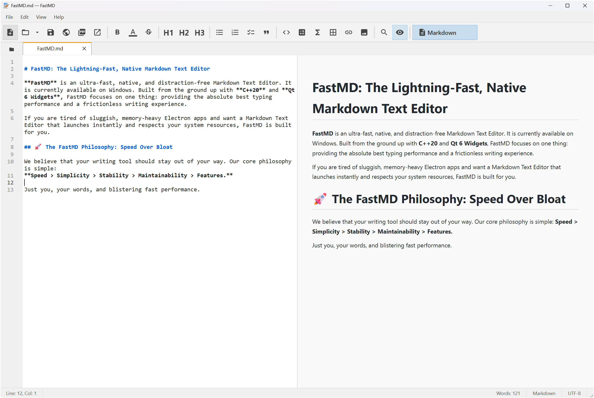

Fast, lightweight Markdown and Text Editor.
Built for developers and writers who want instant performance. Written natively in C++20 with Qt 6 widgets and zero Electron bloat.

Why Choose FastMD?
We believe your text editor should stay out of your way and launch instantly. Speed and native execution are our core priorities.
Blazing Fast Performance
The window appears near-instantly — the preview engine initializes asynchronously in the background, so it never blocks startup or typing. Typing latency stays low even on large documents.
True Native Desktop App
The editor and UI are built with C++20 and Qt 6 Widgets — no Electron, no Node.js, and no bundled browser. The live preview reuses the Microsoft Edge WebView2 runtime already on Windows, so nothing extra is shipped.
Offline and Secure
100% private and offline. No user accounts, no telemetry, no tracking, and no cloud syncing. Your files never leave your computer.
Advanced Export Pipeline
Unified pipeline using MD4C. Export your work to clean self-contained HTML, print-ready PDFs, or Word DOCX via Pandoc.
By The Numbers
See how a native C++ and Qt 6 desktop application stacks up against typical Electron-based editors.
| Performance Metric | Typical Electron Editor | FastMD (C++ / Qt) | Efficiency Difference |
|---|---|---|---|
| Base Download Size | 100 MB – 150 MB | ~1.5 MB | ~100x smaller executable |
| Bundled browser engine | Yes (Chromium per app) | None (shared OS WebView2) | Nothing extra shipped |
| Average Idle RAM Usage | 500 MB – 1000 MB | ~250 MB (incl. shared preview) | ~2–4x lighter memory footprint |
| Cold Startup (window visible) | 2.0s – 4.0s | ~0.4–0.5s | ~5–8x faster launch speed |
| Cloud Connections & Telemetry | Dozens of background requests | None (100% Offline) | Zero background data transfer |